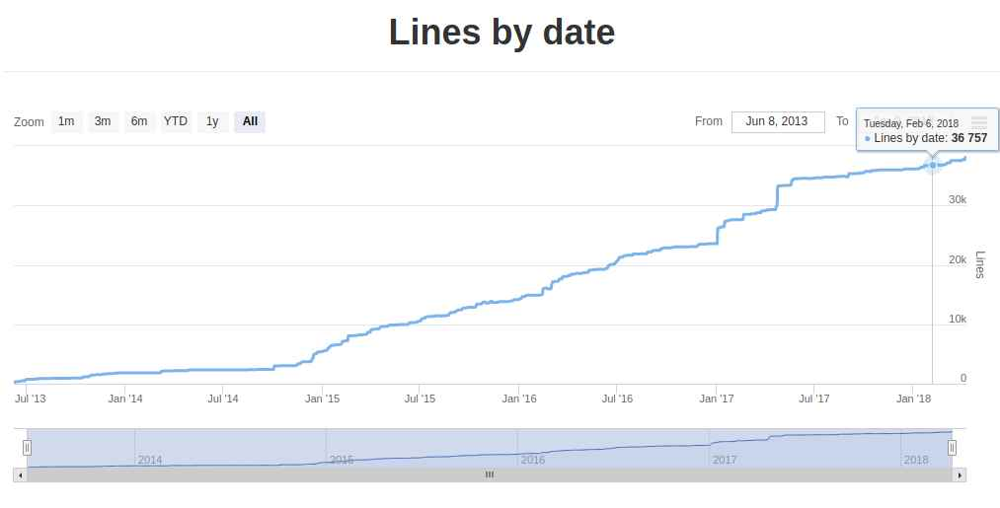

Docker Meetup Córdoba / Abril 2018
Dokku

mini-Heroku en tu propia infraestructura
por Gonzalo Matheu
Introducción
Gonzalo Matheu
Trabajo en:
 Heroku
Heroku
Heroku is a cloud platform that lets companies build, deliver, monitor and scale apps — we're the fastest way to go from idea to URL, bypassing all those infrastructure headaches.
PaaS: Platform as a Service
permite ejecutar y gestionar aplicaciones abstrayendo infraestructura y procesos de despliegue.
Heroku: Lo Bueno
- Push to deploy
git push heroku masterRuby, Go, Python, Java, NodeJs...Heroku: No Tan Bueno
- Escalar es caro
Varios procesos + Base de datos + SSL ~30 USDEntonces...


Dokku
mini-Heroku basado en Docker. The smallest PaaS implementation you've ever seen.
The smallest PaaS implementation you've ever seen???
100 líneas de código en 2013
500 líneas en 2015
actualmente 9000 líneas
en BASH!!!
Dokku: Hechos
- Plataforma Open Source
- Usa Docker a secas (single-host). Docker Swarm?
- Mínimos requerimientos de hardware (~1GB)
- Overhead casi nulo
- Extensible mediante plugins
- Soporta gran parte de las funcionalidades de Heroku
git push heroku masterDokku: Componentes
- Docker: como motor de ejecución
- Nginx: balanceador de carga
- gitreceive: lanza acciones con git push
- sshcommand: expone aplicación cliente vía ssh
- buildpacks/herokuish: para definir el ciclo de deploy
Buildpacks
Receta para construir aplicación en distintas fases:
- detect: detecta que stack usar y como ejecutarla
- compile: instala dependencias y compila
- test-compile: prepara la ejecución de pruebas
- test: ejecuta pruebas
Los de Heroku están abiertos: https://github.com/heroku-buildpacks
Dokku: Plugins
- Base de Datos Sql
- NoSql
- Cache
- Notificaciones
- Seguridad
- Nuevas funcionalidades
Dokku: Flujo de Trabajo
- Crear aplicación
ssh dokku@my-server apps:create meetup-appgit remote add dokku dokku@my-server:meetup-appgit push dokku masterDokku: Flujo de Trabajo (II)
- Escalar (agregar workers)
ssh dokku@my-server ps:scale meetup-app web=2
ssh dokku@my-server posgres:create meetup-app-database
ssh dokku@my-server posgres:link meetup-app-database meetup-app
Dokku: Casos más complejos
- Procfile: para personalizar procesos de la aplicación
web: python manage.py runserver 5000
worker: python3 manage.py rqworker_i18n my-worker
{
"scripts": {
"dokku": {
"predeploy": "python manage.py migrate",
}
}
}
Dokku: Deploy Dockerfile
- Dockefile
FROM debian:jessie
# set the argument default
ARG NODE_ENV=production
# assign it to an environment variable
# we can wrap the variable in brackets
ENV NODE_ENV ${NODE_ENV}
ADD . /app
# custom logic
# use the argument
RUN echo $NODE_ENV
Cuando usar?

Cuando usar?
- Poco hardware
- Ambientes no críticos
- Side projects
- Alta disponibilidad
Alternativas

Flynn
- Alta disponibilidad
- Servicios con alta disponibilidas (MongoDb, PostgresSql)
- Escalabilidad siguiendo usando principios de 12 factor apps
- Por lo menos 2GB de RAM
- No hay tantos servicios (BDs, Caching, Monitoring)
Deis Workflow
- Corre sobre Kubernetes
- Sponsorea Dokku
- Por lo menos 4GB RAM
Cerrando...
- Heroku tiene un modelo de deploy poderoso y sencillo
- Dokku imita gran parte de las funcionalidades de Heroku (deploy)
- Varios proyectos spin-off de Dokku: sshcommand, buildstep/herokuish
- Dokku para escenarios pequeños/no críticos
Preguntas?

Gracias!
@gmatheu en Twitter, Github